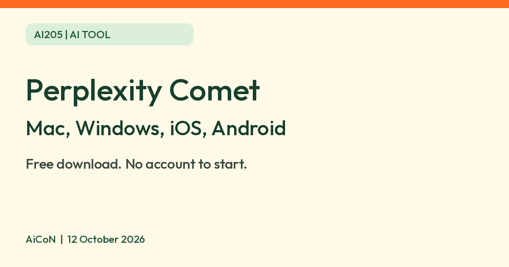

Perplexity Comet browser: free download, what the assistant can do, and how to limit it
Perplexity says Comet, its AI browser, is free to download and works without an account. Its current download page lists Windows, Mac, iOS and Android. This guide focuses on the desktop install and assistant controls. You control what the assistant can access.

What it is
Comet is a web browser from Perplexity with built-in AI features. Perplexity says the Assistant can help with questions and tasks, and its controls let you allow or stop access to browser history, web navigation and interaction with sites.
Is it free?
Yes to download and start. Perplexity's launch post says it released Comet "to the world, for free" and that you can download it at perplexity.ai/comet. Its help center says you do not need a Perplexity account to browse and try basic AI features. Signing in unlocks saved chats, sync and "more powerful AI features and higher limits". The pages we read do not give the exact Free usage limits, and some features are tied to paid plans. For example, the launch post says its Email Assistant is for Max subscribers.
Who can use it
- Desktop: Windows 10 or later, or macOS 11 (Big Sur) or later, per Perplexity's install page. Intel, AMD or Apple Silicon; at least 4 GB RAM (8 GB recommended), 500 MB disk space and an internet connection for installation and updates.
- The desktop install page covers Windows and Mac. The current Comet download page also lists iOS and Android. Perplexity announced Android on 20 November 2025 and iOS on 18 March 2026. Mobile features and requirements may differ. Phone OS requirements were not checked.
- India is not named on these pages. The 2 October 2025 launch post says "to the world, for free"; this is not an India-specific availability check. We did not test the download from India.
Privacy and control
- Perplexity says your browsing data, including visited sites and cookies, is stored on your device by default, and that Comet sends only minimal context to Perplexity when a request needs it.
- It says Comet will always ask for approval before using another service such as Gmail, and never has access to your passwords or payment data.
- You can change what the Assistant can see or do in Settings > Privacy and security. You can block specific sites, and Perplexity gives your bank's website as an example. It says Incognito mode stops the Assistant indexing your browsing.
- AiCoN advice: an assistant that can click and fill forms deserves care. Block banking and email sites, and read what it plans to do before you approve.
How to try it
- Download the installer from Perplexity's Comet page and run it.
- Choose whether to sign in. You can skip it.
- Import bookmarks from your old browser if you want, then open the side panel and ask a question about the page.
Limits to know
- The launch post is from 2 October 2025. The help pages we used were updated in September 2026. Details may have changed.
- Privacy statements here are Perplexity's claims from "Control what Comet Assistant can use", not an independent privacy audit.
Frequently asked questions
Do I need a Perplexity account?
No, per Perplexity. Signing in adds saved chats, sync and higher limits.
Does it work on Android or iPhone?
Yes. The current official download page lists iOS and Android alongside Mac and Windows. We did not install or test either mobile version.
Can I stop it using certain sites?
Yes. Perplexity says you can block tasks on specific websites in settings.
What changed since this post?
Official sources rechecked 12 October 2026. Corrected the older desktop-only wording: the current Comet page lists Mac, Windows, iOS and Android. Added official mobile launch dates and desktop RAM/disk requirements. Free download wording comes from the 2 October 2025 launch post; exact Free AI limits and India-specific availability were not verified. Account and assistant-control claims match the help pages, but were not tested in-product.
Sources: Current Comet download page, iOS launch, Android launch, Perplexity: The internet is better on Comet, Do I need a Perplexity account, Installing Comet, Control what Comet Assistant can use. Checked 12 October 2026.